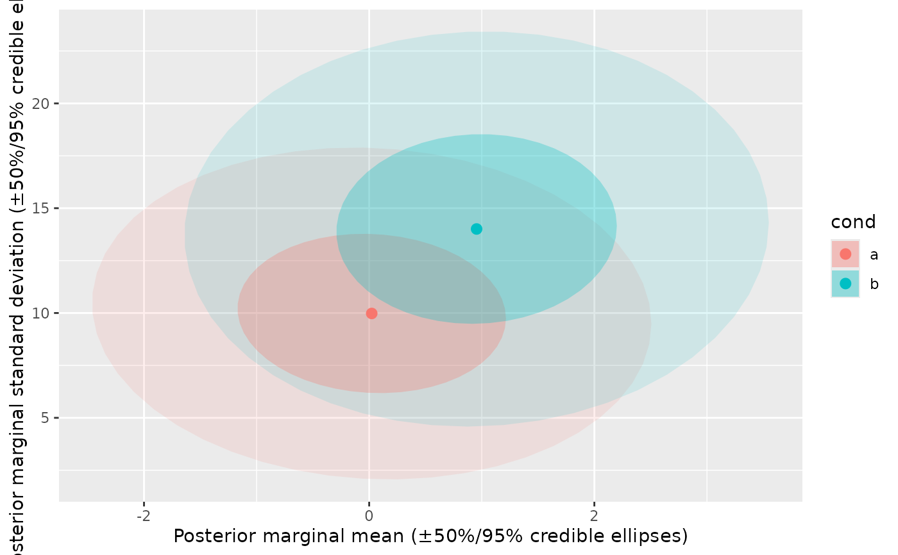

Joint (location, scale) scatter with credible ellipses
Source:R/theme-bayes-location-scale.R
plot_location_scale.RdJoint (location, scale) plot: one point + bivariate credible ellipse per
condition, for visualizing a hypothesis where location and scale move
together, without forcing the reader to cross-reference two separate
plot_ridge_hdi() calls (one on the location submodel, one on sigma).
Optionally overlays a sigma_max ceiling-effect reference curve
(y = sqrt((x - lower)(upper - x))) so a condition's actual scale can be
read directly against the maximum a bounded response scale permits at
that location.
Usage
plot_location_scale(
data,
category,
location,
sigma,
shape = NULL,
facet = NULL,
facet_nrow = NULL,
facet_ncol = NULL,
facet_scales = "fixed",
bounds = NULL,
bounds_n = 512,
location_transform = identity,
sigma_transform = identity,
ellipse_level = c(0.5, 0.95),
ellipse_type = "norm",
ellipse_geom = c("polygon", "path"),
ellipse_alpha = NULL,
point_size = 2.5,
curve_color = NULL,
xlab = NULL,
ylab = NULL
)Arguments
- data
A data frame of paired per-draw (location, scale) values.
- category
Unquoted column identifying each condition - drives color and (together with
shape, if given) the ellipse/point grouping.- location, sigma
Unquoted columns holding the per-draw location and scale values. No default - unlike
layer_halfeye_hdi()'svalue = .value(a real tidybayes convention), there's no equivalent widely-used column name for a paired location/sigma draw, so a same-named default (location = location) would only "work" by coincidence when the caller's data happens to have columns literally calledlocation/sigma- and crash with a cryptic R-level "recursive default argument reference" error otherwise, since looking up the unmatched symbol falls through to the function's own unforced argument promise of the same name. Always pass both explicitly.- shape
Optional unquoted column for a second crossed factor (e.g. negation) - mapped to the point glyph only (ellipses have no shape aesthetic); grouping becomes the interaction of
categoryandshapewhen both are given.- facet
Optional unquoted column to facet by.
- facet_nrow, facet_ncol, facet_scales
Passed to
facet_wrap()whenfacetis given.- bounds
c(lower, upper)- if given, draws the sigma_max reference curve;NULL(default) omits it for a plain joint location-scale plot.- bounds_n
Number of points used to draw the sigma_max curve.
- location_transform, sigma_transform
Applied once, before aggregation/plotting (e.g.
expfor a sigma submodel estimated on the log scale) - the point estimate ismean(transform(draws)), nottransform(mean(draws)).- ellipse_level
One or more credible levels, each drawn as its own
stat_ellipse()layer - defaultc(.5, .95), a narrow "core" ellipse plus a wide outer one. Levels are told apart byellipse_alphaalone (same per-category hue throughout), drawn widest-first so the narrowest ends up nested visibly on top.- ellipse_type
Passed to
stat_ellipse()'stype.- ellipse_geom
"polygon"(default - a shaded region with no outline) or"path"(outline only, no fill; stays legible when many conditions' ellipses overlap heavily, at the cost of the shaded look).- ellipse_alpha
NULL(default) fades from a solid-ish core at the narrowest level out to a faint band at the widest (flat.25if only one level is requested); pass a single number to use that alpha for every level, or a vector the same length as the dedupedellipse_levelfor full manual control.- point_size
Size of the per-condition point.
- curve_color
Color of the sigma_max reference curve; defaults to
mt_colors[2].- xlab, ylab
NULL(default) builds a label naming both the quantity and the uncertainty measure(s) shown; pass a string to override either.
Details
No custom Stat here - the bivariate region is
ggplot2::stat_ellipse(), already in ggplot2 core.
data must contain PAIRED per-draw location and scale values (one row
per category, optionally per shape, and per .draw - i.e. from the
same posterior iteration, not two independently-summarized submodels),
e.g.:
loc <- mod |> emmeans(~condition) |> gather_emmeans_draws()
sig <- mod |> emmeans(~condition, dpar = "sigma") |> gather_emmeans_draws()
data <- inner_join(loc, sig, by = c(<grouping cols>, ".draw"),
suffix = c("_location", "_sigma"))
Paired (not independently-summarized) draws matter here specifically so the ellipse reflects the joint uncertainty in a condition's (location, scale) pair, not two unrelated marginal intervals mashed into a fake cross.
Examples
set.seed(1)
n_draw <- 500
# paired per-draw (location, scale) values - see Details for why the
# pairing (same .draw per condition) matters
paired <- data.frame(
cond = rep(c("a", "b"), each = n_draw),
location = c(rnorm(n_draw), rnorm(n_draw, 1)),
sigma = c(rgamma(n_draw, 10), rgamma(n_draw, 14))
)
plot_location_scale(paired, category = cond, location = location, sigma = sigma)
